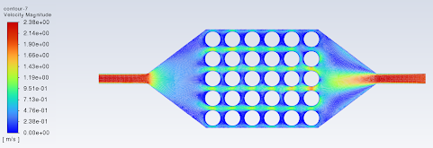

CFD-Based Thermal Assessment of Air-Cooled Battery Packs
A comparative 2D steady RANS study of inline and staggered cell arrangements, examining the trade-off between battery cooling performance and pressure drop.
Lund University · With Ella Majasuo and Hekla Lind Bergmann
Methods, results & my contribution
The team used 2D steady RANS simulations with the realizable k–ε turbulence model, Enhanced Wall Treatment, and Fluent’s COUPLED solver to compare mesh sizes and cell arrangements.
- Created the geometry and screened RANS turbulence models.
- Generated the 1.0 mm mesh used for the sensitivity study.
- Ran simulations concurrently with two teammates across three computers to evaluate mesh sizes and cell arrangements.
At 4 m/s, the inline arrangement reached 351.91 K, compared with 360.96 K for the staggered arrangement—a 9.05 K cooling advantage. This came with a higher pressure drop: 18.31 Pa versus 16.17 Pa.